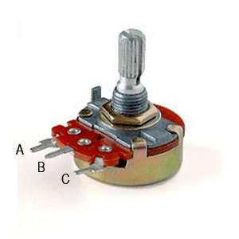
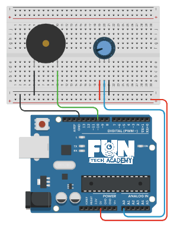
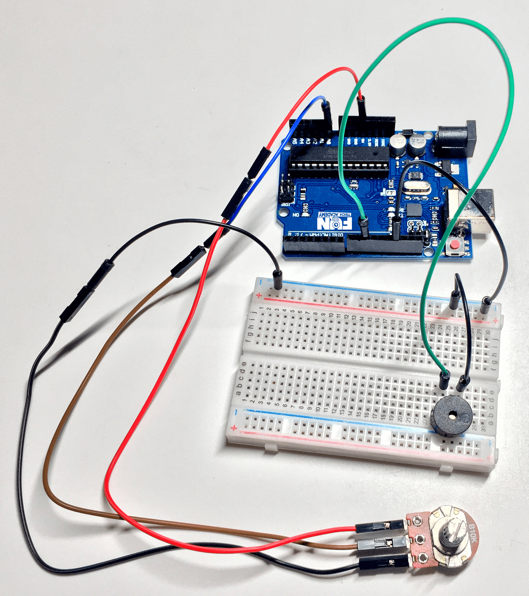

En este tema veremos los distintos tipos de potenciómetros y aprenderemos a utilizalos.
(1) x Placa Arduino
(1) x Potenciómetro de Variación Lineal
(1) x Zumbador pasivo
(6) x M M cables (cables macho a macho)
El potenciómetro nos proporciona una resistencia variable según vayamos modificando su posición.
Si está totalmente cerrado obtendremos como salida el máximo voltaje (el de entrada), si lo tenemos totalmente
abierto, obtendremos 0 voltios y si lo tenemos en una posición intermedia obtendremos una fracción del voltaje
de entrada proporcional a la posición en la que se encuentre.
Encontraremos potenciómetros de diferentes resustencias, la más típica es la de 10 kΩ.
Normalmente tienen 3 patillas. Según el potenciómetro que utilicemos, deberemos identificar la funcionalidad
de cada patilla.
Una patilla irá conectada a la fuente de alimentación, otra a tierra o GND y por último la tercera patilla
será la salida del potenciómetro.
En el caso de la siguiente imagen, la patilla A es el voltaje de operación, la patilla B es la salida y la
patilla C es la tierra.

Existen varios tipos de potenciómetros pero los más comunes y con los que casi siempre vamos a trabajar son:
- Variación lineal: La resistencia es directamente proporcional al ángulo de
giro, es lineal (son los más comunes).
- Variación logarítmica: La resistencia depende logarítmicamente del ángulo de
giro (circuitos de audio).
El potenciómetro de variación lineal nos permite modificar el voltaje de una forma lineal, eso quiere decir
que a mitad del recorrido del potenciómetro nos devuelve el 50% del voltaje.
La resistencia aumenta o varía en proporción directa al movimiento de su cursor, lo que nos lleva a una curva
que justamente es una recta, de ahí su nombre.

Se puede hacer entonces una correspondencia directa de su resistencia con el ángulo de giro del potenciômetro, obteniéndose con eso una escala con divisiones iguales.
En el caso de los potenciómetros logarítmicos, lo que ocurre es que la variación de la resistencia no corresponde de modo directo al movimiento del cursor, obteniéndose una curva como muestra en la imagen.

Esta curva tiene su utilidad práctica. Nuestro oído tiene una curva de sensibilidad no lineal, lo que quiere
decir que somos más sensibles a variaciones de intensidad de un sonido de baja potencia que a un sonido de
alta potencia.
Por este motivo los controles de volumen de radios y amplificadores deben acompañar esta sensibilidad siendo
sus potenciómetros del tipo logarítmico, cuya curva corresponde justamente a la respuesta de intensidad de
nuestro oído.

En la placa Arduino UNO tenemos 6 pines analógicos, desde A0 hasta A5 y su uso común es la lectura de datos
de dispositivos analógicos como es el caso del potenciómetro.
Tienen una resolución de 10 bits lo que implica que tenemos 1024 valores diferentes, es decir, podemos leer
un rango de tensiones desde 0V hasta 5V detectando cambios de voltaje de 0.004V (5/1024). Por lo que los
valores que obtendremos irán desde 0 hasta 1023.

Una vez efectuado todo el cableado, descargaremos el script del siguiente este link y lo cargaremos como hemos aprendido.
Vamos a añadir 5 LEDs rojos a nuestro circuito.
El reto consistirá en que según vayamos modificando la posición del potenciómetro iremos encendiendo uno, dos,
tres o los cuatro LEDs dependiendo de la apertura potenciómetro:
- Si lo tenemos totalmente abierto, no estará ninguno encendido.
- Si lo tenemos abierto entre 3/4 y el total, se encenderá el primer LED.
- Si lo tenemos abierto entre la mitad y 3/4 del total, se encenderá el primero y el segundo LED.
- Si lo tenemos abierto entre 1/4 y la mitad del total, se encenderá el primero, el segundo y el tercer
LED.
- Si lo tenemos abierto entre nada y 1/4 del total, se encenderá el primero, el segundo, el tercero y
el cuarto LED.
- Si lo tenemos totalmente cerrado, se encenderán todos los LEDs.